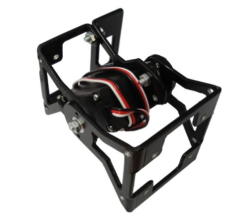
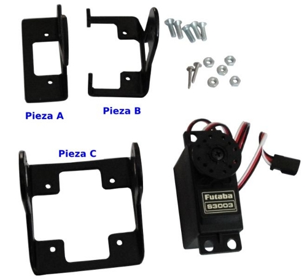

Ya está terminada la primera versión de la documentación del montaje de los módulos MY1.

Los módulos MY1 se montan muy fácilmente. Están formados por tres piezas (A,B C) de aluminio de 2mm de espesor, pintadas de negro. Para el montaje se necesita un servo 3003 o compatible, tornillos de métrica 3 con sus tuercas y dos de los tornillos que vienen con el servo.